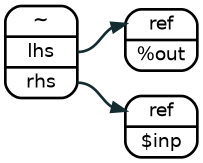
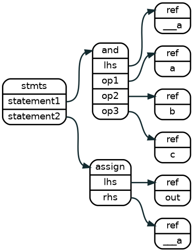
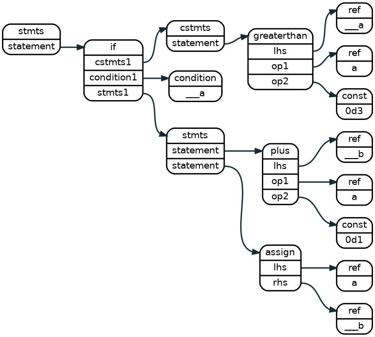
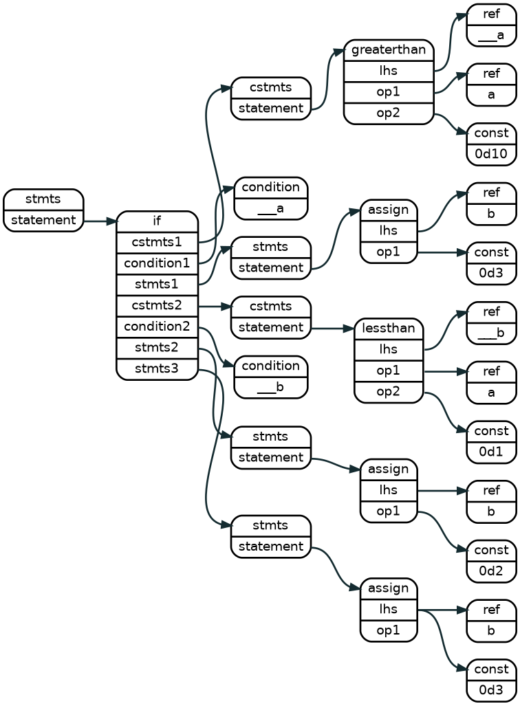
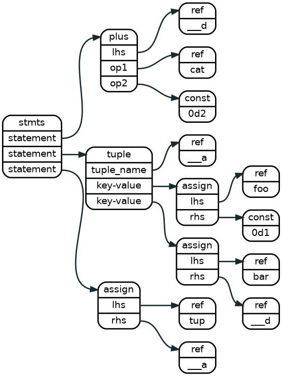
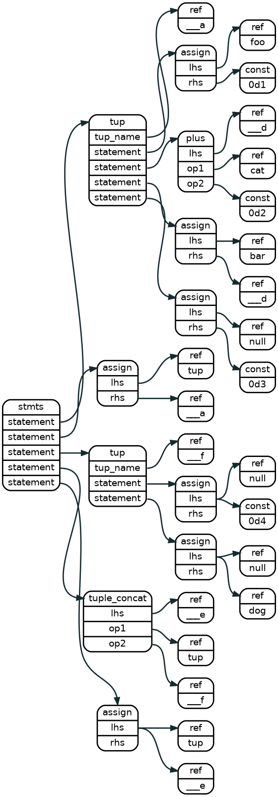
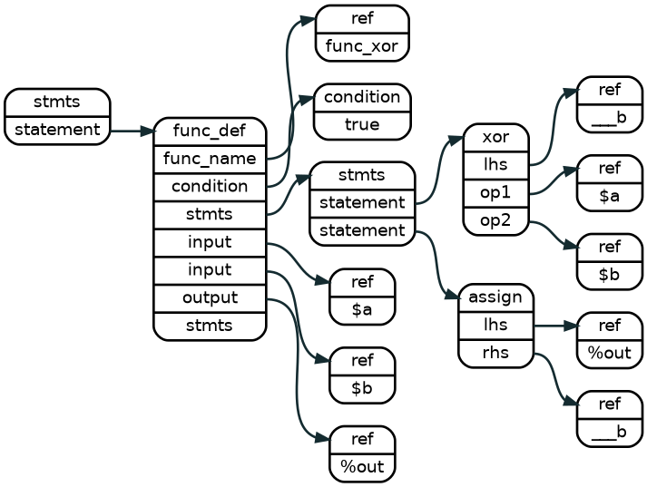
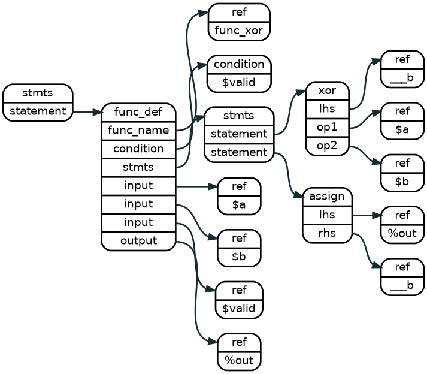

Introduction
LNAST stands for Language-Neutral Abstract Syntax Tree, which is constituted of
Lnast_nodes and indexed by a tree structure.
Each Lnast_node should has a specific node type and contain the following information from source code tokens
(a) line number
(b) pos_start, pos_end
(c) string_view (optional)
Function Overloadings of Node Data Construction
Every node construction method has four function overloadings.
For example, to construct a Lnast_node with a type of reference,
we could use one of the following functions:
// C++
auto node_ref = Lnast_node::create_ref("foo");
auto node_ref = Lnast_node::create_ref("foo", line_num);
auto node_ref = Lnast_node::create_ref("foo", line_num, pos1, pos2);
auto node_ref = Lnast_node::create_ref(token);
In case (1), you only knows the variable name is "foo".
In case (2), you know the variable name and the corresponding line number.
In case (3), you know the variable name, the line number, and the charactrer position.
In case (4), you are building LNAST from your HDL AST and you already have the Token.
The toke should have line number, positions, and string_view information.
Another Example
If you don't care the string_view to be stored in the lnast node, just leave it empty for set "foo" for it. This is true for many of the operator node, for example, to build a node with type of assign.
// C++
auto node_assign = Lnast_node::create_assign();
auto node_assign = Lnast_node::create_assign(line_num);
auto node_assign = Lnast_node::create_assign(line_num, pos1, pos2);
auto node_assign = Lnast_node::create_assign(token); // The token is not necessary to have a string_view
Module Input, Output, and Register Declaration
In LNAST, all input/output/register are defined in the node type reference with differenct prefix of string_view, "$" stands for input, "%" stands for output, and "#" stands for register.
Input
// Pyrope
foo = $a
// Verilog
input a;
// C++
auto node_input = Lnast_node::create_ref("$a", line_num, pos1, pos2);
Output
// Pyrope
%out
// Verilog
output out;
// C++
auto node_output = Lnast_node::create_ref("%out", line_num, pos1, pos2);
Register
// Pyrope
#reg_foo
// Verilog
reg reg_foo;
// C++
auto node_reg = Lnast_node::create_ref("#reg_foo", line_num, pos1, pos2);
Assign Statement
Assign Trivial Constant
// Pyrope
val = 1023u10bits
// Verilog
assign val = 10`d1023
// CFG
1 0 0 SEQ0
2 1 0 0 10 = val 0d1023u10
// C++
auto node_stmts = Lnast_node::create_stmts ("foo", line_num, pos1, pos2);
auto node_assign = Lnast_node::create_assign ("foo", line_num, pos1, pos2);
auto node_target = Lnast_node::create_ref ("val", line_num, pos1, pos2);
auto node_const = Lnast_node::create_const ("0d1023u10", line_num, pos1, pos2);
auto idx_stmts = lnast->add_child(idx_root, node_stmts);
auto idx_assign = lnast->add_child(idx_stmts, node_assign);
auto idx_target = lnast->add_child(idx_assign, node_target);
auto idx_const = lnast->add_child(idx_assign, node_const);
 An assign node sets the right hand side value to the reference pointed by the left hand side
An assign node sets the right hand side value to the reference pointed by the left hand side
of the expression. The left hand side is always a reference. The right hand side is a reference or a constant.
Assign Simple Expression
// Pyrope
total = (x - 1) + 3 + 2
// Verilog
assign total = (x - 1) + 3 + 2
// CFG
1 0 0 SEQ0
2 1 0 0 21 - ___a x 0d1
3 1 1 0 21 + ___b ___a 0d3 0d2
4 1 3 0 21 = total ___b
// C++
// preparing lnast_node data
// Note: as mentioned in the introduction, if you have the HDL-AST in hand, using
// Token directly instead of explicit string, line_num, pos ... etc.
auto node_stmts = Lnast_node::create_stmts ("foo", line_num, pos1, pos2);
node node_minus = Lnast_node::create_minus ("foo", line_num, pos1, pos2);
node node_lhs1 = Lnast_node::create_ref ("___a", line_num, pos1, pos2);
node node_op1 = Lnast_node::create_ref ("x", line_num, pos1, pos2);
node node_op2 = Lnast_node::create_const ("0d1", line_num, pos1, pos2);
node node_plus = Lnast_node::create_plis ("bar", line_num, pos1, pos2);
node node_lhs2 = Lnast_node::create_ref ("___b", line_num, pos1, pos2);
node node_op3 = Lnast_node::create_ref ("___a", line_num, pos1, pos2);
node node_op4 = Lnast_node::create_const ("0d3", line_num, pos1, pos2);
node node_op5 = Lnast_node::create_const ("0d2", line_num, pos1, pos2);
auto node_assign = Lnast_node::create_assign ("foo2", line_num, pos1, pos2);
auto node_lhs3 = Lnast_node::create_ref ("total", line_num, pos1, pos2);
auto node_op6 = Lnast_node::create_ref ("___b", line_num, pos1, pos2);
// construct the LNAST tree
auto idx_stmts = lnast->add_child(idx_root, node_stmts);
auto idx_minus = lnast->add_child(idx_stmts, node_minus);
auto idx_lhs1 = lnast->add_child(idx_minus, node_lhs1);
auto idx_op1 = lnast->add_child(idx_minus, node_op1);
auto idx_op2 = lnast->add_child(idx_minus, node_op2);
auto idx_plus = lnast->add_child(idx_stmts, node_plus);
auto idx_lhs2 = lnast->add_child(idx_plus, node_lhs2);
auto idx_op3 = lnast->add_child(idx_plus, node_op3);
auto idx_op4 = lnast->add_child(idx_plus, node_op4);
auto idx_op5 = lnast->add_child(idx_plus, node_op5);
auto idx_assign = lnast->add_child(idx_stmts, node_assign);
auto idx_lhs3 = lnast->add_child(idx_assign, node_lhs3);
auto idx_op6 = lnast->add_child(idx_assign, node_op6);
 statements that have operations must breakdown the operations per type, and then assign the temporal value to the assign node.
statements that have operations must breakdown the operations per type, and then assign the temporal value to the assign node.
Unary Operation Statement
Unary operator is embedded as the prefix of the variable string_view
Not Operation
// Pyrope
%out = ~$inp
// Verilog
input inp;
output wire out;
assign out = ~inp;
1 0 0 SEQ0
2 1 1 0 10 = %out ~$inp
//C++
auto idx_assign = lnast->add_child(idx_stmts, Lnast_node::create_assign(token1));
auto idx_lhs = lnast->add_child(idx_assign, Lnast_node::create_ref (token2)); // string_view = %out
auto idx_op = lnast->add_child(idx_assign, Lnast_node::create_ref (token3)); // string_view = ~$inp

N-ary Operation Statement
N-ary operation computes n rhs operands and assign the result to the lhs. The n-ary operator includes (1) And Operation (2) Or Operation (3) Xor Operation (4) Logical And Operation (5) Logical Or Operation (6) Plus Operation (7) Minus Operation (8) Multiply Operation (9) Division Operation (10) Equals to Operation (11) Less than Operation (12) Less than or Equals to Operation (13) Greater than Operation (14) Greater than or Equals to Operation
We takes the "and operation" for demonstration.
And Operation
// Pyrope
out = a & b & c
// Verilog
assign out = a & b & c
// CFG
1 0 0 SEQ0
2 1 0 0 21 & ___a a b c
3 1 3 0 21 = out ___a
// C++
auto idx_stmts = lnast->add_child(idx_root, Lnast_node::create_stmts(token0));
auto idx_and = lnast->add_child(idx_stmts, Lnast_node::create_and (token1)); // string_view = ___a
auto idx_lhs1 = lnast->add_child(idx_and, Lnast_node::create_ref (token2)); // string_view = a
auto idx_op1 = lnast->add_child(idx_and, Lnast_node::create_ref (token3)); // string_view = b
auto idx_op2 = lnast->add_child(idx_and, Lnast_node::create_ref (token4)); // string_view = c
auto idx_assign = lnast->add_child(idx_stmts, Lnast_node::create_assign(token5));
auto idx_lhs2 = lnast->add_child(idx_assign, Lnast_node::create_ref (token6)); // string_view = out
auto idx_op3 = lnast->add_child(idx_assign, Lnast_node::create_ref (token7)); // string_view = ___a

If Statement
Simple Case
if a > 3 {
b = a + 1
}
// CFG
1 0 0 SEQ0
2 1 0 0 24 if ___a
3 2 0 SEQ1
4 3 0 0 24 > ___a a 0d3
6 2 0 SEQ2
7 6 0 0 24 + ___b a 0d1
8 6 1 0 24 = a ___b
assign b = (a > 3) ? a - 1 : b; //FIXME: SH: incomplete cases? combinational loop!?
//C++
auto idx_stmts0 = lnast->add_child(idx_root, Lnast_node::create_stmts (token_0));
auto idx_if = lnast->add_child(idx_stmts0, Lnast_node::create_if (token_1));
auto idx_cstmts = lnast->add_child(idx_if, Lnast_node::create_cstmts(token_2));
auto idx_gt = lnast->add_child(idx_cstmts, Lnast_node::create_gt (token_3));
auto idx_lhs = lnast->add_child(idx_gt, Lnast_node::create_ref (token_4)); //string_view = "___a"
auto idx_op1 = lnast->add_child(idx_gt, Lnast_node::create_ref (token_5)); //string_view = "a"
auto idx_op2 = lnast->add_child(idx_gt, Lnast_node::create_const (token_6)); //string_view = "0d3"
auto idx_cond1 = lnast->add_child(idx_if, Lnast_node::create_cond (token_7)); //string_view = "___a"
auto idx_stmts1 = lnast->add_child(idx_if, Lnast_node::create_stmts (token_8));
auto idx_plus = lnast->add_child(idx_stmts1, Lnast_node::create_plus (token_9));
auto idx_lhs = lnast->add_child(idx_plus, Lnast_node::create_ref (token_a)); //string_view = "___b"
auto idx_op3 = lnast->add_child(idx_plus, Lnast_node::create_ref (token_b)); //string_view = "a"
auto idx_op4 = lnast->add_child(idx_plus, Lnast_node::create_const (token_c)); //string_view = "0d1"
auto idx_assign = lnast->add_child(idx_stmts1, Lnast_node::create_assign(token_d));
auto idx_lhs = lnast->add_child(idx_assign, Lnast_node::create_ref (token_e)); //string_view = "a"
auto idx_op5 = lnast->add_child(idx_assign, Lnast_node::create_ref (token_f)); //string_view = "___b"
 An if-subtree consisted of conditional-statements sub-trees, boolean condition nodes, and statements sub-trees in the following order:
cstmts1 -> condition1 -> stmts1 -> cstmts2 -> condition2 -> stmts2 ...-> stmtsN,
If there is a final "else" chunk, it won't come with a corresponding conditionial statements sub-tree and conditional node, see the figure for the detail.
Full Case
// Pyrope
if a > 10 {
b = 3
} elif a < 1 {
b = 2
} else {
b = 1
}
// Verilog
assign b = (a > 10) ? 3 :
(a < 1 ) ? 2 : 1 ;
// CFG
1 0 0 SEQ0
2 1 0 0 62 if ___a
3 2 0 SEQ1
4 3 0 0 62 > ___a a 0d10
6 2 0 SEQ2
7 6 0 0 62 = b 0d3
9 2 2 0 62 elif ___b
10 2 0 SEQ3
11 10 0 0 62 < ___b a 0d1
13 2 0 SEQ4
14 13 0 0 62 = b 0d2
16 2 0 SEQ5
17 16 0 0 62 = b 0d1
//C++
auto idx_stmts0 = lnast->add_child(idx_root, Lnast_node::create_stmts (token_0));
auto idx_if = lnast->add_child(idx_stmts0, Lnast_node::create_if (token_1));
auto idx_cstmts1 = lnast->add_child(idx_if, Lnast_node::create_cstmts(token_2));
auto idx_gt = lnast->add_child(idx_cstmts, Lnast_node::create_gt (token_3));
auto idx_lhs = lnast->add_child(idx_gt, LNast_node::create_ref (token_4)); //string_view = "___a"
auto idx_op1 = lnast->add_child(idx_gt, LNast_node::create_ref (token_5)); //string_view = "a"
auto idx_op2 = lnast->add_child(idx_gt, LNast_node::create_const (token_6)); //string_view = "0d10"
auto idx_cond1 = lnast->add_child(idx_if, Lnast_node::create_cond (token_7)); //string_view = "___a"
auto idx_stmts1 = lnast->add_child(idx_if, Lnast_node::create_stmts (token_8));
auto idx_assign = lnast->add_child(idx_stmts1, Lnast_node::create_assign(token_9));
auto idx_lhs = lnast->add_child(idx_assign, LNast_node::create_ref (token_a)); //string_view = "b"
auto idx_op1 = lnast->add_child(idx_assign, LNast_node::create_const (token_b)); //string_view = "0d3"
auto idx_cstmts2 = lnast->add_child(idx_if, Lnast_node::create_cstmts(token_c));
auto idx_lt = lnast->add_child(idx_cstmts, Lnast_node::create_lt (token_d));
auto idx_lhs = lnast->add_child(idx_lt, LNast_node::create_ref (token_e)); //string_view = "___b"
auto idx_op2 = lnast->add_child(idx_lt, LNast_node::create_ref (token_f)); //string_view = "a"
auto idx_op3 = lnast->add_child(idx_lt, LNast_node::create_const (token_g)); //string_view = "0d1"
auto idx_cond2 = lnast->add_child(idx_if, Lnast_node::create_cond (token_h)); //string_view = "___b"
auto idx_stmts2 = lnast->add_child(idx_if, Lnast_node::create_stmts (token_i));
auto idx_assign = lnast->add_child(idx_stmts2, Lnast_node::create_assign(token_j));
auto idx_lhs = lnast->add_child(idx_assign, LNast_node::create_ref (token_k)); //string_view = "b"
auto idx_op4 = lnast->add_child(idx_assign, LNast_node::create_const (token_l)); //string_view = "0d2"
auto idx_stmts3 = lnast->add_child(idx_if, Lnast_node::create_stmts (token_m));
auto idx_assign = lnast->add_child(idx_stmts3, Lnast_node::create_assign(token_n));
auto idx_lhs = lnast->add_child(idx_assign, LNast_node::create_ref (token_o)); //string_view = "b"
auto idx_op5 = lnast->add_child(idx_assign, LNast_node::create_const (token_p)); //string_view = "0d3"

Tuple Statement
// Pyrope
tup = (foo = 1, bar = cat + 2, 3)
// Verilog
// CFG
1 0 0 SEQ0
2 1 0 TUP0 ___a
3 2 0 0 33 = foo 0d1
4 2 1 0 33 + ___d cat 0d2
5 2 2 0 33 = bar ___d
6 2 3 0 33 = null 0d3
7 1 4 0 33 = tup ___a
//C++
auto idx_tup = lnast->add_child(idx_stmts0, Lnast_node::create_tuple (token_1)); //string_view = "___a"
auto idx_assign = lnast->add_child(idx_tup, Lnast_node::create_assign (token_2));
auto idx_lhs = lnast->add_child(idx_assign, LNast_node::create_ref (token_3)); //string_view = "foo"
auto idx_op1 = lnast->add_child(idx_assign, LNast_node::create_const (token_4)); //string_view = "0d1"
auto idx_plus = lnast->add_child(idx_tup, Lnast_node::create_plus (token_5));
auto idx_lhs = lnast->add_child(idx_plus, LNast_node::create_ref (token_6)); //string_view = "___d"
auto idx_op2 = lnast->add_child(idx_plus, LNast_node::create_ref (token_7)); //string_view = "cat"
auto idx_op3 = lnast->add_child(idx_plus, LNast_node::create_const (token_8)); //string_view = "0d2"
auto idx_assign = lnast->add_child(idx_tup, Lnast_node::create_assign (token_9));
auto idx_lhs = lnast->add_child(idx_assign, LNast_node::create_ref (token_a)); //string_view = "bar"
auto idx_op4 = lnast->add_child(idx_assign, LNast_node::create_ref (token_b)); //string_view = "___d"
auto idx_assign = lnast->add_child(idx_tup, Lnast_node::create_assign (token_c));
auto idx_lhs = lnast->add_child(idx_assign, LNast_node::create_ref (token_d)); //string_view = "null"
auto idx_op5 = lnast->add_child(idx_assign, LNast_node::create_const (token_e)); //string_view = "0d3"
auto idx_assign = lnast->add_child(idx_stmts0, Lnast_node::create_assign (token_f));
auto idx_lhs = lnast->add_child(idx_assign, LNast_node::create_ref (token_g)); //string_view = "tup"
auto idx_op6 = lnast->add_child(idx_assign, LNast_node::create_ref (token_h)); //string_view = "___a"

Tuple Concatenation Statement
// Pyrope
tup = (foo = 1, bar = cat + 2, 3)
tup = tup ++ (4, dog)
// Verilog
// CFG
1 0 0 SEQ0
2 1 0 TUP0 ___a
3 2 0 0 33 = foo 0d1
4 2 1 0 33 + ___d cat 0d2
5 2 2 0 33 = bar ___d
6 2 3 0 33 = null 0d3
7 1 4 0 33 = tup ___a
8 1 0 TUP1 ___f
9 8 5 35 54 = null 0d4
10 8 6 35 54 = null dog
11 1 7 35 54 ++ ___e tup ___f
12 1 8 35 54 = tup ___e
//C++
auto idx_tup = lnast->add_child(idx_stmts0, Lnast_node::create_tuple (token_1)); //string_view = "___a"
auto idx_assign = lnast->add_child(idx_tup, Lnast_node::create_assign (token_2));
auto idx_lhs = lnast->add_child(idx_assign, LNast_node::create_ref (token_3)); //string_view = "foo"
auto idx_op1 = lnast->add_child(idx_assign, LNast_node::create_const (token_4)); //string_view = "0d1"
auto idx_plus = lnast->add_child(idx_tup, Lnast_node::create_plus (token_5));
auto idx_lhs = lnast->add_child(idx_plus, LNast_node::create_ref (token_6)); //string_view = "___d"
auto idx_op1 = lnast->add_child(idx_plus, LNast_node::create_ref (token_7)); //string_view = "cat"
auto idx_op2 = lnast->add_child(idx_plus, LNast_node::create_const (token_8)); //string_view = "0d2"
auto idx_assign = lnast->add_child(idx_tup, Lnast_node::create_assign (token_9));
auto idx_lhs = lnast->add_child(idx_assign, LNast_node::create_ref (token_a)); //string_view = "bar"
auto idx_op3 = lnast->add_child(idx_assign, LNast_node::create_ref (token_b)); //string_view = "___d"
auto idx_assign = lnast->add_child(idx_tup, Lnast_node::create_assign (token_c));
auto idx_lhs = lnast->add_child(idx_assign, LNast_node::create_ref (token_d)); //string_view = "null"
auto idx_op4 = lnast->add_child(idx_assign, LNast_node::create_const (token_e)); //string_view = "0d3"
auto idx_assign = lnast->add_child(idx_stmts0, Lnast_node::create_assign (token_f));
auto idx_lhs = lnast->add_child(idx_assign, LNast_node::create_ref (token_g)); //string_view = "tup"
auto idx_op5 = lnast->add_child(idx_assign, LNast_node::create_ref (token_h)); //string_view = "___a"
auto idx_tup2 = lnast->add_child(idx_stmts0, Lnast_node::create_tuple (token_i)); //string_view = "___f"
auto idx_assign = lnast->add_child(idx_tup2, Lnast_node::create_assign (token_j));
auto idx_lhs = lnast->add_child(idx_assign, LNast_node::create_ref (token_k)); //string_view = "null"
auto idx_op6 = lnast->add_child(idx_assign, LNast_node::create_const (token_l)); //string_view = "0d4"
auto idx_assign = lnast->add_child(idx_tup2, Lnast_node::create_assign (token_m));
auto idx_lhs = lnast->add_child(idx_assign, LNast_node::create_ref (token_n)); //string_view = "null"
auto idx_op7 = lnast->add_child(idx_assign, LNast_node::create_reg (token_o)); //string_view = "dog"
auto idx_tconcat = lnast->add_child(idx_stmts0, Lnast_node::create_tuple_concat (token_p));
auto idx_lhs = lnast->add_child(idx_tconcat, LNast_node::create_ref (token_q)); //string_view = "___e"
auto idx_op8 = lnast->add_child(idx_tconcat, LNast_node::create_ref (token_r)); //string_view = "tup"
auto idx_op9 = lnast->add_child(idx_tconcat, LNast_node::create_ref (token_s)); //string_view = "___f"
auto idx_assign = lnast->add_child(idx_stmts0, Lnast_node::create_assign (token_t));
auto idx_lhs = lnast->add_child(idx_assign, LNast_node::create_ref (token_u)); //string_view = "tup"
auto idx_op5 = lnast->add_child(idx_assign, LNast_node::create_ref (token_v)); //string_view = "___e"

!!!For Loop Statement
!!!While Loop Statement
Function Definition Statement
Basic Function Definition
A function could be viewed as a module, the arguments of a function represent the module IO with the io-prefix, $ for input or % for output.
In LNAST, a function definition statement is composed as the following node sequence:
function_name -> condition -> statements(function body) -> io_1 -> io_2 -> io_N ...
// Pyrope
func_xor = :($a, $b, %out):{
%out = $a ^ $b
}
// Verilog
module func_xor(
input a,
input b,
outpout wire out
);
assign out = a ^ b;
endmodule
// CFG
1 0 0 SEQ0
2 1 0 0 47 ::{ ___a null $a $b %out
4 2 0 SEQ1
5 4 0 0 47 ^ ___b $a $b
6 4 1 0 47 = %out ___b
7 1 1 0 47 = func_xor \___a
//C++
auto idx_stmts0 = lnast->add_child(idx_root, Lnast_node::create_stmts (token_0));
auto idx_func = lnast->add_child(idx_stmts0, Lnast_node::create_func_def(token_1));
auto idx_fname = lnast->add_child(idx_func, Lnast_node::create_ref (token_2)); //string_view = "func_xor"
auto idx_cond = lnast->add_child(idx_func, Lnast_node::create_cond (token_3)); //string_view = "true"
auto idx_stmts1 = lnast->add_child(idx_func, Lnast_node::create_stmts (token_4));
auto idx_io1 = lnast->add_child(idx_func, Lnast_node::create_ref (token_5)); //string_view = "$a"
auto idx_io2 = lnast->add_child(idx_func, Lnast_node::create_ref (token_6)); //string_view = "$b"
auto idx_io3 = lnast->add_child(idx_func, Lnast_node::create_ref (token_7)); //string_view = "$out"
auto idx_xor = lnast->add_child(idx_stmts1, Lnast_node::create_xor (token_7));
auto idx_lhs = lnast->add_child(idx_xor, LNast_node::create_ref (token_8)); //string_view = "___b"
auto idx_op1 = lnast->add_child(idx_xor, LNast_node::create_ref (token_9)); //string_view = "$a"
auto idx_op2 = lnast->add_child(idx_xor, LNast_node::create_ref (token_a)); //string_view = "$b"
auto idx_assign = lnast->add_child(idx_stmts1, Lnast_node::create_assign (token_b));
auto idx_lhs = lnast->add_child(idx_assign, LNast_node::create_ref (token_c)); //string_view = "%out"
auto idx_op1 = lnast->add_child(idx_assign, LNast_node::create_ref (token_d)); //string_view = "___b"

Conditional Function Definition
If the HDL support the conditional function definition, for example, Pyrope, we have to assign the appropriate condition variable to the condition node. For normal case, we assign "true" string_view to this condition node. See figure for better understanding.
// Pyrope
func_xor = :($a, $b, %out) when $valid:{
%out = $a ^ $b
}
// Verilog
module func_xor(
input a,
input b,
outpout wire out
);
assign out = a ^ b;
endmodule
// CFG
1 0 0 SEQ0
2 1 0 0 47 ::{ ___a $valid $a $b %out
4 2 0 SEQ1
5 4 0 0 47 ^ ___b $a $b
6 4 1 0 47 = %out ___b
7 1 1 0 47 = func_xor \___a
//C++
auto idx_stmts0 = lnast->add_child(idx_root, Lnast_node::create_stmts (token_0));
auto idx_func = lnast->add_child(idx_stmts0, Lnast_node::create_func_def(token_1));
auto idx_fname = lnast->add_child(idx_func, Lnast_node::create_ref (token_2)); //string_view = "func_xor"
auto idx_cond = lnast->add_child(idx_func, Lnast_node::create_cond (token_3)); //string_view = "$valid"
auto idx_stmts1 = lnast->add_child(idx_func, Lnast_node::create_stmts (token_4));
auto idx_io1 = lnast->add_child(idx_func, Lnast_node::create_ref (token_5)); //string_view = "$a"
auto idx_io2 = lnast->add_child(idx_func, Lnast_node::create_ref (token_6)); //string_view = "$b"
auto idx_io3 = lnast->add_child(idx_func, Lnast_node::create_ref (token_7)); //string_view = "$out"
auto idx_xor = lnast->add_child(idx_stmts1, Lnast_node::create_xor (token_7));
auto idx_lhs = lnast->add_child(idx_xor, LNast_node::create_ref (token_8)); //string_view = "___b"
auto idx_op1 = lnast->add_child(idx_xor, LNast_node::create_ref (token_9)); //string_view = "$a"
auto idx_op2 = lnast->add_child(idx_xor, LNast_node::create_ref (token_a)); //string_view = "$b"
auto idx_assign = lnast->add_child(idx_stmts1, Lnast_node::create_assign (token_b));
auto idx_lhs = lnast->add_child(idx_assign, LNast_node::create_ref (token_c)); //string_view = "%out"
auto idx_op1 = lnast->add_child(idx_assign, LNast_node::create_ref (token_d)); //string_view = "___b"

!!!Function Call
!!!Attribute
!!!Statements (code block for same scopes)
!!!Assertion
Examples
trivial counter
TBD